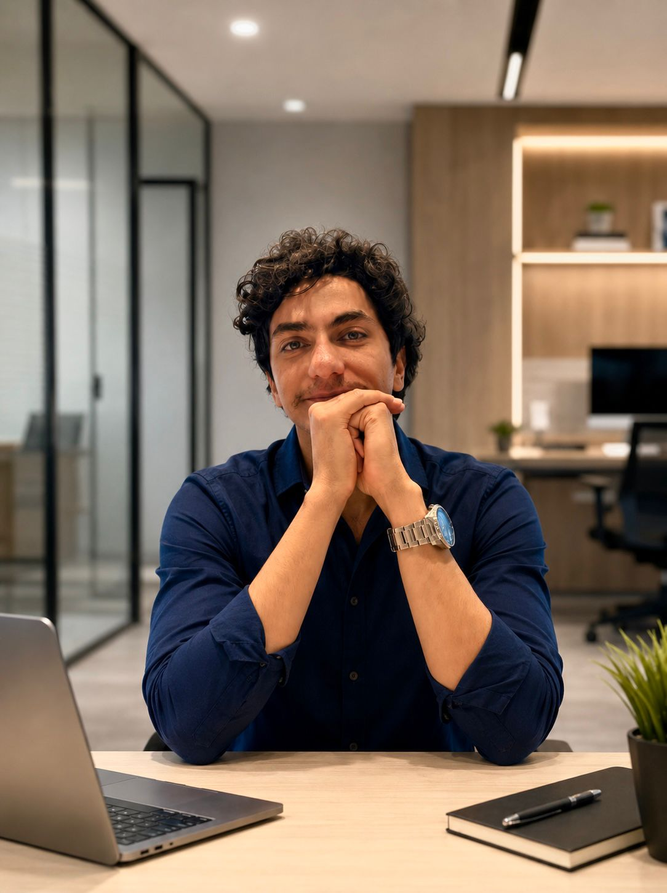
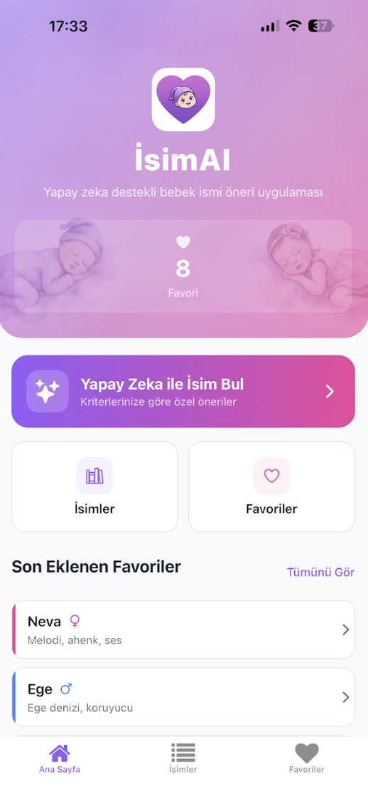
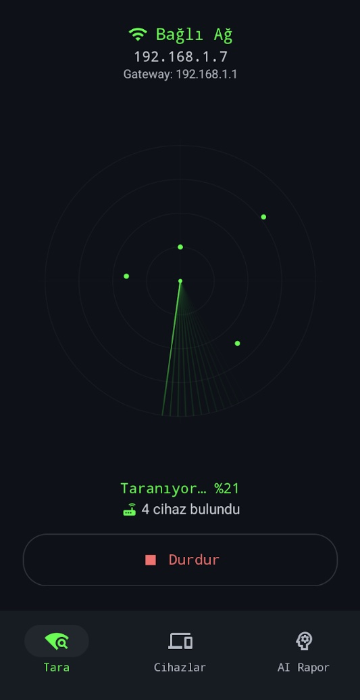

Emre Baran
Arca.
Sistemleri tasarlar, kodu yazarım. Yazılımı titizlik ve disiplin isteyen bir mühendislik işi olarak görürüm.
Ağırlıklı olarak backend tarafında çalışırım — Node.js, NestJS, TypeScript. Servisleri gRPC ve RabbitMQ üzerinden birbirine konuşturur, WebSocket ile gerçek zamanlı iletişimi sağlar, üstüne React frontend'i geliştiririm. AWS altyapısından Google Play yayınına kadar bir ürünü uçtan uca tek başıma yürütebiliyorum.

Yazılım, salt düşünceyle makineler inşa etmenin keşfettiğim en yakın hali.
Yaklaşık iki yıllık profesyonel deneyime sahip bir full-stack yazılım mühendisiyim, çoğunu backend'de geçirdim. Başkalarının sıkıcı bulduğu kısımları severim — şema tasarımı, mesaj kuyrukları, retry'lar, iki servis arasındaki sözleşme — çünkü güvenilirlik gerçekten orada yaşar.
Çanakkale Onsekiz Mart Üniversitesi Bilgisayar Mühendisliği bölümünden 2025'te mezun oldum ve kendi ürünlerimi de geliştiriyorum — veritabanından mağaza listesine kadar tek başıma tasarlayıp yayınladığım iki yapay zekâ destekli uygulama. Bir şeyi uçtan uca sahiplenmek, bildiğim en hızlı mühendis olma yolu.
Yazılım Mühendisi / Teknik Proje Koordinatörü
Meyer Group'ta kıdemli teknik rol — 145 yıllık kimlik tanıma ve güvenlik teknolojisi şirketi (THY ve Koç Holding gibi müşterileri var). Teknik yazılım uygulamaları tarafını uçtan uca sahiplendim, altyapı kurulumundan stabil canlıya geçişe kadar.
- Proje altyapısını kurguladım ve kurdum; dağıtım hatlarını ve canlıya alma süreçlerini stabil üretime kadar yönettim.
- Müşteri gereksinimleri için en uygun uygulama stratejilerini belirlemek üzere sistem mimarisini ve altyapıyı değerlendirdim.
- İş ve teknik ihtiyaçları uygulanabilir spesifikasyonlara — SRS, kullanıcı senaryoları, iş akışları — dönüştürdüm.
- Sprint planlaması ve backlog önceliklendirmesi ile geliştirme, test ve destek ekiplerini koordine ettim.
Backend Geliştirici
Bir B2B fintech süper uygulamasını yeniden inşa eden 5 kişilik mühendislik ekibine katıldım. Bu rol, bugün üzerinde çalıştığım sistemlerin büyük bölümünü kapsadı — production'da backend hakkında bildiğim hemen her şeyi burada öğrendim.
- Mikroservis dönüşümü — platformu modüler monolitten 4 adet gRPC tabanlı servise yeniden tasarladım, RabbitMQ mesajlaşma ile birlikte; alanlar arası dağıtım bağımsızlığı ve hata izolasyonu kazandık.
- Gerçek zamanlı iletişim — WebSocket tabanlı canlı sohbet ve sesli görüşme servisini NestJS backend ve React frontend üzerinde uçtan uca geliştirdim.
- API'ler & frontend'ler — REST ve GraphQL endpoint'ler tasarladım; üstüne tip güvenli React + TypeScript admin panelleri, Redux ile state yönetimi ve performans optimizasyonları yayınladım.
- Cloud & CI/CD — AWS altyapısını (EC2, S3, DynamoDB, Lambda, Cognito) hazırladım, servisleri Docker ile konteynerize ettim ve CI/CD süreçlerine katkıda bulundum.
- Güvenilirlik & performans — izleme için Prometheus + Grafana panoları kurdum; veritabanı yanıt sürelerini somut şekilde azaltan dağıtık Redis önbellekleme stratejileri geliştirdim.
Bağımsız Geliştirici
Google Play'de iki yapay zekâ destekli mobil uygulamayı — IsimAI ve Pingsight — veri modelinden backend'e, UI'dan mağaza listesine kadar tek başıma tasarladım, geliştirdim ve yayınladım.
"Your Diary Mood" web uygulaması için Node.js, TypeScript ve MongoDB ile backend bileşenleri geliştirdim, yazılım mimarisi iyileştirmelerine katkıda bulundum.
MVC tabanlı bir mimari içinde backend REST API'leri geliştirdim ve baktım.
IsimAI
Yapay zekâyla üretilen kişiselleştirilmiş bebek isimleri.
Binlerce bebek ismi arasında seçim yapmak ezici bir problem. IsimAI birkaç ipucunu gerçekten uyan kısa bir listeye dönüştürür — GPT destekli kişiselleştirilmiş öneriler. Tek geliştirici olarak uçtan uca tasarlandı, geliştirildi ve yayınlandı.


Pingsight
Ağına yapay zekânın gözünden bak.
Bağlı olduğun Wi-Fi'ı tarar, üzerindeki tüm cihazları keşfeder ve neyin açıkta olduğunu yüzeye çıkarmak için yapay zeka destekli bir güvenlik analizi çalıştırır. Kendi kendini gerçekten açıklayan bir ağ tarayıcısı.
Yayına alınanlar
Açık kaynak & yan projeler
// kullandığım araçlar, sistemde nerede yaşadıklarına göre gruplanmış
Yazılım geliştirmenin kolayca yanlış yapılabilen kısımları üzerine notlar ve videolar — dağıtık sistemler, algoritmalar, yapay zekâ ve güvenilirliği belirleyen sıkıcı kararlar.
Birlikte
bir şey inşa.
Tam zamanlı işlere, freelance projelere ve sistemler hakkında iyi bir sohbete açığım. İstanbul'dan. Bana en hızlı ulaşmanın yolu aşağıda.